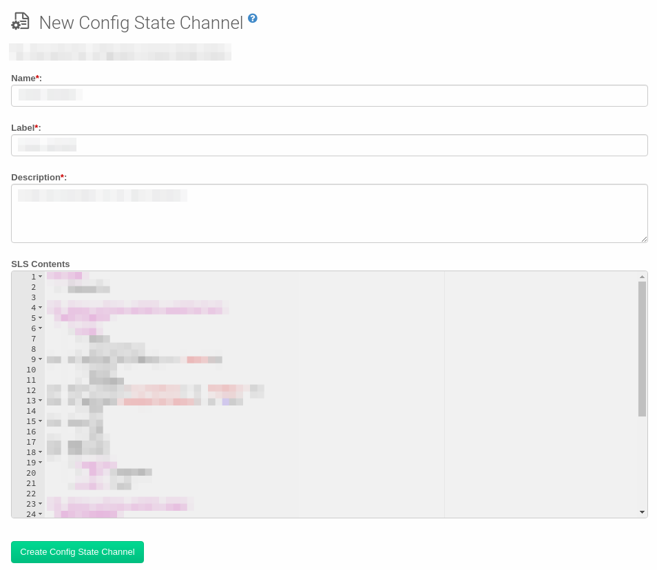
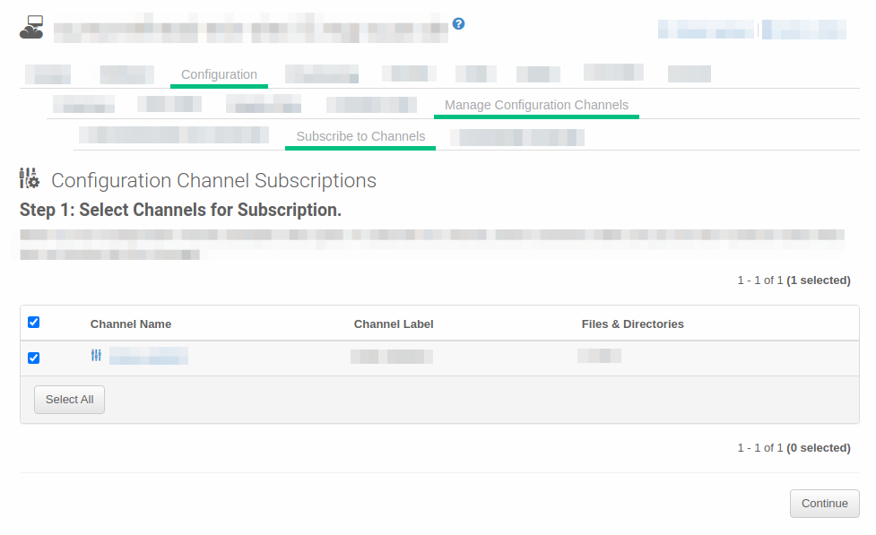

Configuration Management
You can use configuration files and channels to manage configuration for your clients, rather than configuring each client manually. This workflow shows you how to use the SUSE Manager Web UI to create a centrally managed configuration file, assign it to a Salt client, and apply the configuration.
1. Use case
If you are managing a lot of clients, you probably do not want to manually apply configuration settings to each of them in turn. Configuration channels are used to organize configuration files. You can subscribe clients to configuration channels, and deploy configuration files as required.
2. Outcome
When you have completed this workflow, you will have a configuration channel containing a configuration file, have assigned clients to the channel, and applied the configuration successfully.
3. Preparation
Before you start, you should already have:
-
SUSE Manager Server installed, that you can access using the Web UI.
-
At least one Salt client registered to your server.
-
Appropriate subscriptions from http://scc.suse.com for the products you are using.
This workflow uses a centrally managed configuration file and a Salt state. You can also use locally managed configuration files, traditional clients, and different methods, to get more flexibility in how you manage configuration in your environment. For more information about the different ways to manage configuration, see Configuration Management.
4. Step-by-step workflow instructions
-
In the SUSE Manager Web UI, navigate to and click Create State Channel.
-
Type a name, label, and description for your configuration file, and type the contents of your configuration file. An example that you can copy is at the end of this section. . Click Create Config State Channel
 -
Procedure: Assign clients to the configuration channel
-
In the SUSE Manager Web UI, navigate to and select the client you want to assign to your configuration channel.
-
Navigate to the
Configurationtab. In the guimenu:Configuration Overviewsection, click Subscribe to channels. -
Check the configuration channel you created earlier, and click Continue.
 -
If you have more than one configuration channel, you can rank them in order of importance, or click Update Channel Rankings to finish.
-
In the SUSE Manager Web UI, navigate to and select the client you want to assign to your configuration channel.
-
Navigate to the
Configurationtab. In the guimenu:Configuration Actionssection, click Deploy all managed config files.
5. Example
5.1. SLS State for Keeping Clients Updated
include:
- channels
int_keep_system_up2date_updatestack:
pkg.latest:
- pkgs:
- salt
- salt-minion
{%- if grains.os_family == 'Suse'%}
- zypper
- libzypp
{%- elif grains['os_family'] == 'RedHat' %}
{%- if grains['osmajorrelease'] >= 8 %}
- dnf
{%- else %}
- yum
{%- endif %}
{%- endif %}
- require:
- sls: channels
- order: last
int_keep_system_up2date_pkgs:
pkg.uptodate:
- require:
- sls: channels
- pkg: int_keep_system_up2date_updatestack
- order: last
int_reboot_if_needed:
cmd.run:
- name: shutdown -r +5
{%- if grains['os_family'] == 'RedHat' and grains['osmajorrelease'] >= 8 %}
- onlyif: 'dnf -q needs-restarting -r; [ $? -eq 1 ]'
{%- elif grains['os_family'] == 'RedHat' and grains['osmajorrelease'] <= 7 %}
- onlyif: 'needs-restarting -r; [ $? -eq 1 ]'
{%- elif grains['os_family'] == 'Debian' %}
- onlyif:
- test -e /var/run/reboot-required
{%- else %}
- onlyif: 'zypper ps -s; [ $? -eq 102 ]'
{%- endif %}
6. Related topics
-
For more information about configuration management, see Configuration Management.
-
For more information about SLS files, see: https://docs.saltproject.io/en/latest/topics/tutorials/starting_states.html.